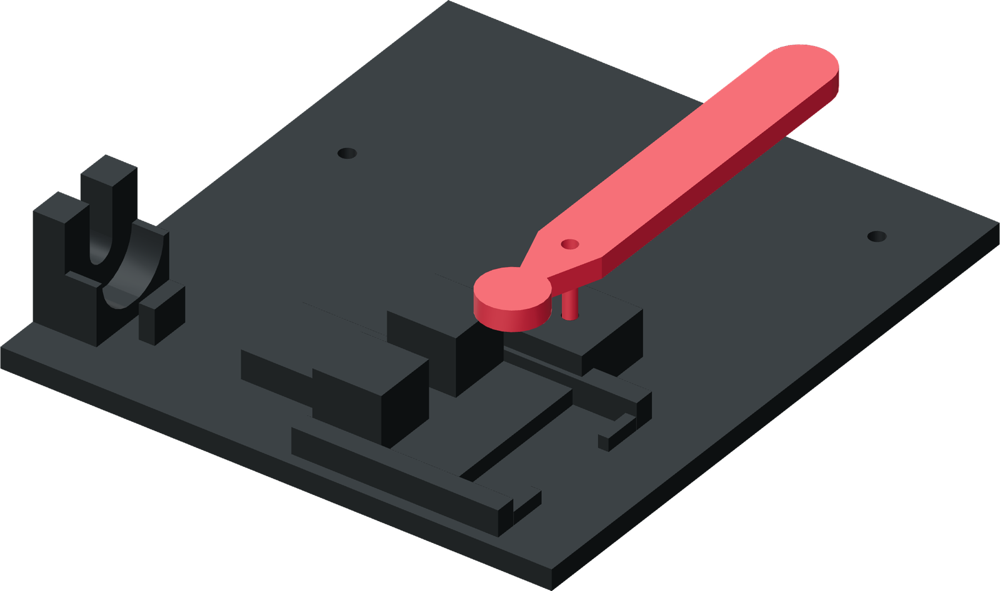

Put C on its pivot
The short rounded nose drives the ram. The long handle stays on the opposite side of the free tube.

- Pass one M5 × 50 socket-head screw up through the pivot hole from the underside. Its head sits in the base's accessible head recess.
- Lower press lever C over the screw, flat on the pedestal, with its short nose toward the ram and long handle over the broad rear area.
- Keep the ram at the forward stop while positioning the short nose against its rear drive face.
Finished when
The screw passes through the lever's pivot bore and the lever is oriented with its short nose at the ram.